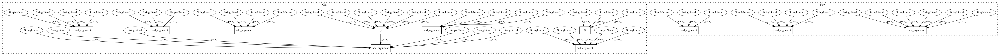

47f6b481964339b4a7ae8e15f3a3610b9722aeb6,cnvlib/commands.py,,,#,1452
Before Change
P_export_bed = P_export_subparsers.add_parser("bed",
help=_cmd_export_bed.__doc__)
P_export_bed.add_argument("segments", nargs="+",
help=Segmented copy ratio data files (*.cns), the output of the
"segment" or "call" sub-commands.)
P_export_bed.add_argument("-i", "--sample-id", metavar="LABEL",
help=Identifier to write in the 4th column of the BED file.
[Default: use the sample ID, taken from the file name])
P_export_bed.add_argument("--ploidy", type=int, default=2,
help="Ploidy of the sample cells. [Default: %(default)d]")
P_export_bed.add_argument("-x", "--sample-sex", "-g", "--gender",
dest="sample_sex",
choices=("m", "y", "male", "Male", "f", "x", "female", "Female"),
help=Specify the sample"s chromosomal sex as male or female.
(Otherwise guessed from X and Y coverage).)
P_export_bed.add_argument("--show",
choices=("ploidy", "variant", "all"), default="ploidy",
help=Which segmented regions to show:
"all" = all segment regions;
"variant" = CNA regions with non-neutral copy number;
"ploidy" = CNA regions with non-default ploidy.
[Default: %(default)s])
P_export_bed.add_argument("-y", "--male-reference", action="store_true",
help=Was a male reference used? If so, expect half ploidy on
chrX and chrY; otherwise, only chrY has half ploidy. In CNVkit,
if a male reference was used, the "neutral" copy number (ploidy)
of chrX is 1; chrY is haploid for either reference sex.)
P_export_bed.add_argument("-o", "--output", help="Output file name.")
P_export_bed.set_defaults(func=_cmd_export_bed)
After Change
nargs="+", metavar="FILES",
help=Tabular files with Ensembl gene ID and number of reads mapped to
each gene, from RSEM or another transcript quantifier.)
P_import_rna.add_argument("-f", "--format",
choices=("rsem", "counts"), default="counts", metavar="NAME",
help=Input format name: "rsem" for RSEM gene-level read counts
(*_rsem.genes.results), or "counts" for generic 2-column gene
IDs and their read counts (e.g. TCGA level 2 RNA expression).
)
P_import_rna.add_argument("-g", "--gene-resource", metavar="FILE",
help="Location of gene info table from Ensembl BioMart.")
P_import_rna.add_argument("-c", "--correlations", metavar="FILE",
help=Correlation of each gene"s copy number with
expression. Output of cnv_expression_correlate.py.)
P_import_rna.add_argument("-d", "--output-dir",
default=".", metavar="PATH",
help=Directory to write a CNVkit .cnr file for each input
sample. [Default: %(default)s])
P_import_rna.add_argument("-o", "--output", metavar="FILE",
help="Output file name (summary table).")
P_import_rna.set_defaults(func=_cmd_import_rna)
In pattern: SUPERPATTERN
Frequency: 3
Non-data size: 11
Instances
Project Name: etal/cnvkit
Commit Name: 47f6b481964339b4a7ae8e15f3a3610b9722aeb6
Time: 2018-01-10
Author: eric.talevich@gmail.com
File Name: cnvlib/commands.py
Class Name:
Method Name:
Project Name: etal/cnvkit
Commit Name: 8c9c03c9c7814a9d1d76e87788766ddc36ef7239
Time: 2015-11-07
Author: eric.talevich@gmail.com
File Name: cnvlib/commands.py
Class Name:
Method Name:
Project Name: etal/cnvkit
Commit Name: 29db4abdbeb839340ac5b0caf934ebda93892934
Time: 2017-02-24
Author: eric.talevich@gmail.com
File Name: cnvlib/commands.py
Class Name:
Method Name: